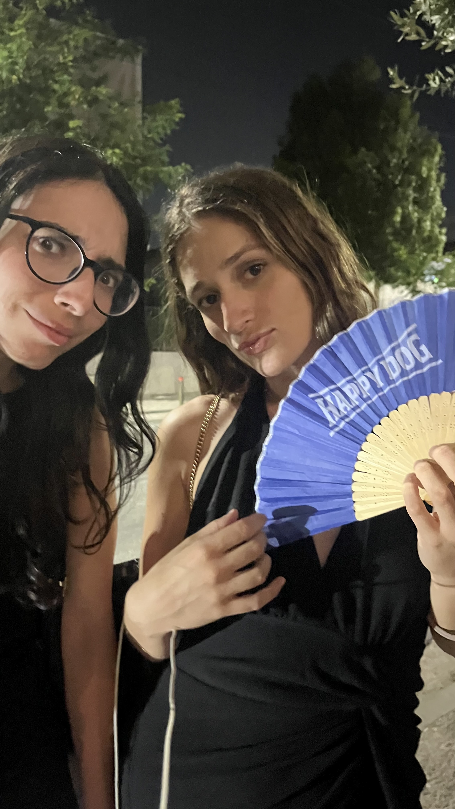
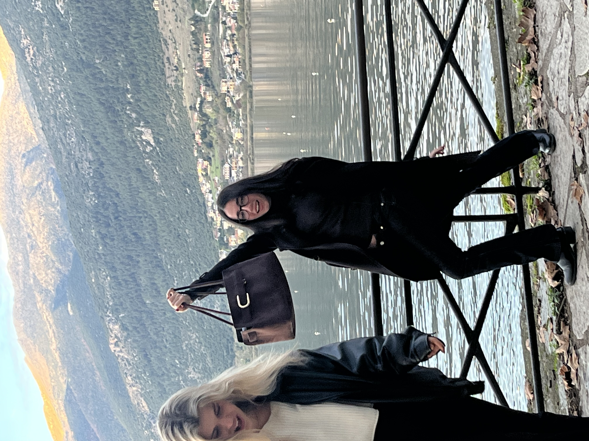
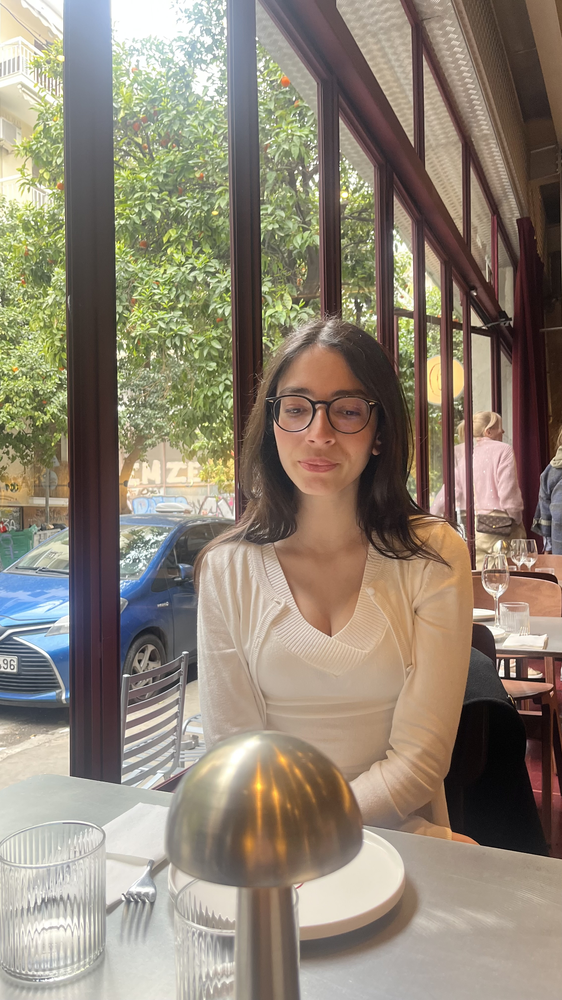
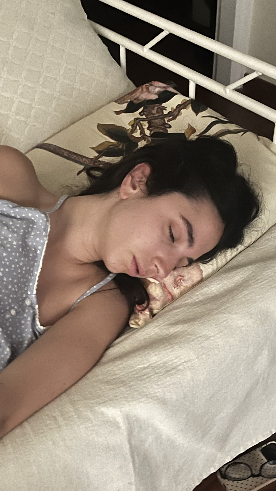

What began as an apparently normal summer evening on the Greek island of Kea has developed into what experts are already calling “an event of almost unreasonable importance.”
Isidora Gkounidi, known in professional circles for her work as a lawyer at Stephenson Harwood, was seen attending a concert by Greek rapper Trannos.
That alone would have been enough.
But then came the photograph.
Sources close to absolutely nobody told The Athens File that the encounter happened during the evening, with Gkounidi appearing remarkably calm despite finding herself at the centre of a developing national situation.
“We thought it was just a concert. We were wrong.”
Witnesses report that music continued playing after the photograph was taken, suggesting organisers had either not yet understood the significance of what had happened or had made the controversial decision to continue the event.
Minute-by-minute reaction
A legal career meets Greek trap
For years, lawyers across the world have dealt with mergers, disputes, contracts and complex international matters.
Few, however, were prepared for this.
The sight of a Stephenson Harwood lawyer at a Trannos concert has already raised important questions about the future relationship between international law and Greek trap music.
No formal guidance has yet been issued.
Andriana Theodoropoulou enters the story

THE FAN INCIDENT: Fencer Andriana Theodoropoulou was also present during the wider social saga.
As if the evening needed another major name, the story also features Andriana Theodoropoulou, the fencer and new Panathinaikos acquisition.
Theodoropoulou — seen in photographic evidence holding what analysts have identified as a blue “HAPPY DOG” fan — has now become an important figure in the wider investigation.
The fan's precise role remains unclear.
“The presence of both law and elite fencing in the same story has made this unprecedented.”
Who exactly is Isidora Gkounidi?
Away from the chaos in Kea, Gkounidi appears to live what investigators describe as an alarmingly normal life.
Photographic archives examined by The Athens File show restaurants, flights, trips, friends and at least one handbag being held at an unusually confident altitude.



Experts say none of these earlier images gave any obvious warning that a Trannos-related development was imminent.
Markets remain open
Despite growing public interest, European financial markets are expected to continue operating normally.
The euro also remains legal tender.
Flights are departing Athens International Airport as scheduled, and there are currently no reports of emergency meetings at NATO.
Nevertheless, The Athens File will continue to monitor the situation.
What happens now?
For the moment, life continues.
Stephenson Harwood continues to practise law.
Panathinaikos continues to exist.
Kea remains geographically where it was before the incident.
And Trannos has, according to all available evidence, survived the encounter.
But for those who were there, one question remains:
Where were you when Isidora met Trannos?